This package contains examples that demonstrate the usage of the components of the Electrical.Analog library.
| Name | Description |
|---|---|
| Cauer low pass filter with analog components | |
| Cauer low pass filter with operational amplifiers | |
| Cauer low-pass filter with operational amplifiers and switched capacitors | |
| Characteristic of ideal diodes | |
| Characteristic of ideal thyristors | |
| Chua's circuit, ns, V, A | |
| Simple NPN transistor amplifier circuit | |
| Heating MOS Inverter | |
| Heating NPN Or Gate | |
| Heating rectifier | |
| CMOS NAND Gate (see Tietze/Schenk, page 157) | |
| B6 diode bridge | |
| Simple demo to show behaviour of SaturatingInductor component | |
| Simple demo of a VariableResistor model | |
| Utility components used by package Examples |
 Modelica.Electrical.Analog.Examples.CauerLowPassAnalog
Modelica.Electrical.Analog.Examples.CauerLowPassAnalog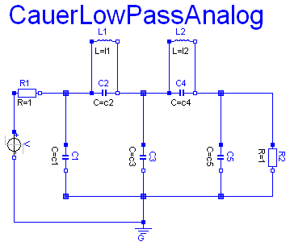
The example Cauer Filter is a low-pass-filter of the fifth order. It is realized using an analog network. The voltage source V is the input voltage (step), and the R2.p.v is the filter output voltage. The pulse response is calculated.
The simulation end time should be 60. Please plot both V.p.v (input voltage) and R2.p.v (output voltage).
| Type | Name | Default | Description |
|---|---|---|---|
| Inductance | l1 | 1.304 | [H] |
| Inductance | l2 | 0.8586 | [H] |
| Capacitance | c1 | 1.072 | [F] |
| Capacitance | c2 | 1/(1.704992^2*l1) | [F] |
| Capacitance | c3 | 1.682 | [F] |
| Capacitance | c4 | 1/(1.179945^2*l2) | [F] |
| Capacitance | c5 | 0.7262 | [F] |
model CauerLowPassAnalog "Cauer low pass filter with analog components" parameter Modelica.SIunits.Inductance l1=1.304; parameter Modelica.SIunits.Inductance l2=0.8586; parameter Modelica.SIunits.Capacitance c1=1.072; parameter Modelica.SIunits.Capacitance c2=1/(1.704992^2*l1); parameter Modelica.SIunits.Capacitance c3=1.682; parameter Modelica.SIunits.Capacitance c4=1/(1.179945^2*l2); parameter Modelica.SIunits.Capacitance c5=0.7262; Modelica.Electrical.Analog.Basic.Ground G; Modelica.Electrical.Analog.Basic.Capacitor C1(C=c1); Modelica.Electrical.Analog.Basic.Capacitor C2(C=c2); Modelica.Electrical.Analog.Basic.Capacitor C3(C=c3); Modelica.Electrical.Analog.Basic.Capacitor C4(C=c4); Modelica.Electrical.Analog.Basic.Capacitor C5(C=c5); Modelica.Electrical.Analog.Basic.Inductor L1(L=l1); Modelica.Electrical.Analog.Basic.Inductor L2(L=l2); Modelica.Electrical.Analog.Basic.Resistor R1; Modelica.Electrical.Analog.Basic.Resistor R2; Modelica.Electrical.Analog.Sources.StepVoltage V(startTime=1, offset=0); equation connect(R1.n,C1. p); connect(C1.n,G. p); connect(R1.n,C2. p); connect(L1.p,C2. p); connect(L1.p,C1. p); connect(L1.n,C2. n); connect(C2.n,C3. p); connect(C2.n,C4. p); connect(L1.n,C3. p); connect(L1.n,C4. p); connect(L2.p,C4. p); connect(C2.n,L2. p); connect(C3.p,L2. p); connect(L2.n,C4. n); connect(L2.n,C5. p); connect(L2.n,R2. p); connect(R2.n,G. p); connect(C4.n,C5. p); connect(C4.n,R2. p); connect(C3.n,G. p); connect(C5.n,G. p); connect(C1.n,C3. n); connect(C1.n,C5. n); connect(R2.n,C5. n); connect(R2.n,C3. n); connect(R2.n,C1. n); connect(C5.p,R2. p); connect(R1.p, V.p); connect(V.n, G.p); end CauerLowPassAnalog;
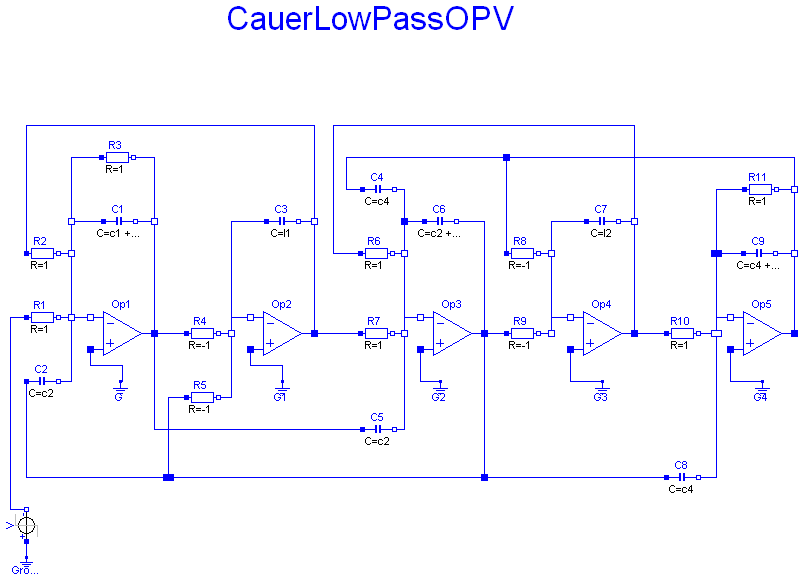
This model is identical to the CauerLowPassAnalog example, but inverting. To get the same response as that of the CauerLowPassAnalog example, a negative voltage step is used as input.
The simulation end time should be 60. Please plot both V.v (which is the inverted input voltage) and OP5.p.v (output voltage). Compare this result with the CauerLowPassAnalog result.
During translation some warnings are issued concerning resistor values (Value=-1 not in range[0,1.e+100]). Do not worry about it. The negative values are o.k.
| Type | Name | Default | Description |
|---|---|---|---|
| Capacitance | l1 | 1.304 | [F] |
| Capacitance | l2 | 0.8586 | [F] |
| Capacitance | c1 | 1.072 | [F] |
| Capacitance | c2 | 1/(1.704992^2*l1) | [F] |
| Capacitance | c3 | 1.682 | [F] |
| Capacitance | c4 | 1/(1.179945^2*l2) | [F] |
| Capacitance | c5 | 0.7262 | [F] |
model CauerLowPassOPV "Cauer low pass filter with operational amplifiers" parameter Modelica.SIunits.Capacitance l1=1.304; parameter Modelica.SIunits.Capacitance l2=0.8586; parameter Modelica.SIunits.Capacitance c1=1.072; parameter Modelica.SIunits.Capacitance c2=1/(1.704992^2*l1); parameter Modelica.SIunits.Capacitance c3=1.682; parameter Modelica.SIunits.Capacitance c4=1/(1.179945^2*l2); parameter Modelica.SIunits.Capacitance c5=0.7262; Modelica.Electrical.Analog.Basic.Capacitor C1(C=c1 + c2); Modelica.Electrical.Analog.Basic.Capacitor C2(C=c2); Modelica.Electrical.Analog.Basic.Capacitor C3(C=l1); Modelica.Electrical.Analog.Basic.Capacitor C4(C=c4); Modelica.Electrical.Analog.Basic.Capacitor C5(C=c2); Modelica.Electrical.Analog.Basic.Resistor R1; Modelica.Electrical.Analog.Basic.Resistor R2; Modelica.Electrical.Analog.Basic.Resistor R3; Modelica.Electrical.Analog.Ideal.IdealOpAmp3Pin Op1; Modelica.Electrical.Analog.Basic.Ground G; Modelica.Electrical.Analog.Basic.Resistor R4(R=-1); Modelica.Electrical.Analog.Basic.Resistor R5(R=-1); Modelica.Electrical.Analog.Ideal.IdealOpAmp3Pin Op2; Modelica.Electrical.Analog.Ideal.IdealOpAmp3Pin Op3; Modelica.Electrical.Analog.Basic.Ground G1; Modelica.Electrical.Analog.Basic.Resistor R6; Modelica.Electrical.Analog.Basic.Resistor R7; Modelica.Electrical.Analog.Basic.Capacitor C6(C=c2 + c3 + c4); Modelica.Electrical.Analog.Basic.Resistor R8(R=-1); Modelica.Electrical.Analog.Basic.Resistor R9(R=-1); Modelica.Electrical.Analog.Basic.Resistor R10; Modelica.Electrical.Analog.Ideal.IdealOpAmp3Pin Op4; Modelica.Electrical.Analog.Ideal.IdealOpAmp3Pin Op5; Modelica.Electrical.Analog.Basic.Capacitor C7(C=l2); Modelica.Electrical.Analog.Basic.Capacitor C8(C=c4); Modelica.Electrical.Analog.Basic.Capacitor C9(C=c4 + c5); Modelica.Electrical.Analog.Basic.Resistor R11; protected Modelica.Electrical.Analog.Interfaces.NegativePin n1; protected Modelica.Electrical.Analog.Interfaces.NegativePin n2; protected Modelica.Electrical.Analog.Interfaces.NegativePin n3; protected Modelica.Electrical.Analog.Interfaces.NegativePin n4; protected Modelica.Electrical.Analog.Interfaces.NegativePin n5; protected Modelica.Electrical.Analog.Interfaces.PositivePin p1; protected Modelica.Electrical.Analog.Interfaces.NegativePin n6; protected Modelica.Electrical.Analog.Interfaces.NegativePin n7; protected Modelica.Electrical.Analog.Interfaces.NegativePin n8; protected Modelica.Electrical.Analog.Interfaces.PositivePin p2; protected Modelica.Electrical.Analog.Interfaces.PositivePin out1; protected Modelica.Electrical.Analog.Interfaces.PositivePin p3; protected Modelica.Electrical.Analog.Interfaces.NegativePin n9; protected Modelica.Electrical.Analog.Interfaces.NegativePin n10; protected Modelica.Electrical.Analog.Interfaces.NegativePin n11; public Modelica.Electrical.Analog.Basic.Ground G2; protected Modelica.Electrical.Analog.Interfaces.NegativePin n12; protected Modelica.Electrical.Analog.Interfaces.NegativePin n13; protected Modelica.Electrical.Analog.Interfaces.PositivePin p4; protected Modelica.Electrical.Analog.Interfaces.NegativePin n14; public Modelica.Electrical.Analog.Basic.Ground G3; Modelica.Electrical.Analog.Basic.Ground G4; Modelica.Electrical.Analog.Sources.StepVoltage V(startTime=1); Modelica.Electrical.Analog.Basic.Ground Ground1; equation connect(Op1.in_p, G.p); connect(G1.p, Op2.in_p); connect(R1.n, n1); connect(n1, Op1.in_n); connect(C2.n, n1); connect(R2.n, n2); connect(n1, n2); connect(n2, n3); connect(n3, C1.p); connect(n3, R3.p); connect(C1.n, n4); connect(R3.n, n4); connect(n4, Op1.out); connect(R4.p, Op1.out); connect(C5.p, Op1.out); connect(R4.n, n5); connect(n5, Op2.in_n); connect(C3.p, n5); connect(R5.n, n5); connect(R5.p, p1); connect(C2.p, p1); connect(C3.n, n6); connect(n6, Op2.out); connect(R2.p, n6); connect(Op2.out, R7.p); connect(R7.n, n7); connect(n7, Op3.in_n); connect(C5.n, n7); connect(R6.n, n8); connect(n7, n8); connect(C6.p, p2); connect(n8, p2); connect(C4.n, p2); connect(C6.n, Op3.out); connect(R9.p, Op3.out); connect(Op3.out, out1); connect(p1, out1); connect(out1, C8.p); connect(C4.p, p3); connect(p3, R8.p); connect(R8.n, n9); connect(n9, n10); connect(R9.n, n10); connect(n10, Op4.in_n); connect(n9, C7.p); connect(C7.n, n11); connect(R6.p, n11); connect(n11, Op4.out); connect(Op4.out, R10.p); connect(G2.p, Op3.in_p); connect(R11.n, n12); connect(p3, n12); connect(C9.n, n13); connect(n12, n13); connect(n13, Op5.out); connect(C9.p, p4); connect(R11.p, p4); connect(R10.n, n14); connect(p4, n14); connect(Op5.in_n, n14); connect(C8.n, n14); connect(Op4.in_p, G3.p); connect(Op5.in_p, G4.p); connect(V.p, Ground1.p); connect(V.n, R1.p); end CauerLowPassOPV;
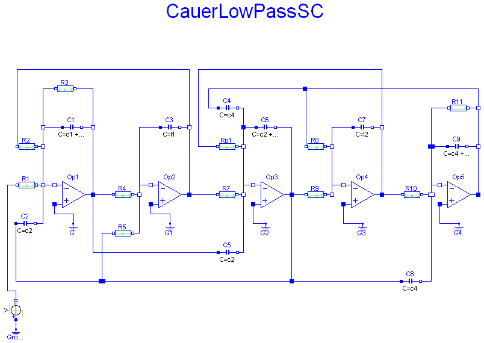
This model is identical to the CauerLowPassAnalog example, but inverting. To get the same response as that of the CauerLowPassAnalog example, a negative voltage step is used as input.
This model is identical to the CauerLowPassOPV example. But the resistors are realized by switched capacitors. There are two such resistors Rp (of value +1), and Rn (of value -1). In this models the switching clock source is included. In a typical switched capacitor circuit there would be a central clock source.
The simulation end time should be 60. Please plot both V.v (which is the inverted input voltage) and OP5.p.v (output voltage). Compare this result with the CauerLowPassAnalog result.
Due to the recharging of the capacitances after switching the performance of simulation is not as good as in the CauerLowPassOPV example.
| Type | Name | Default | Description |
|---|---|---|---|
| Real | l1 | 1.304 | |
| Real | l2 | 0.8586 | |
| Real | c1 | 1.072 | |
| Real | c2 | 1/(1.704992^2*l1) | |
| Real | c3 | 1.682 | |
| Real | c4 | 1/(1.179945^2*l2) | |
| Real | c5 | 0.7262 |
model CauerLowPassSC "Cauer low-pass filter with operational amplifiers and switched capacitors" model Rn parameter Real clock=1; parameter Modelica.SIunits.Resistance R=1 "Resistance"; Modelica.Blocks.Sources.BooleanPulse BooleanPulse1(period=clock); Modelica.Electrical.Analog.Basic.Capacitor Capacitor1(C=R*clock); Modelica.Electrical.Analog.Ideal.IdealCommutingSwitch IdealCommutingSwitch1; Modelica.Electrical.Analog.Ideal.IdealCommutingSwitch IdealCommutingSwitch2; Modelica.Electrical.Analog.Basic.Ground Ground1; Modelica.Electrical.Analog.Basic.Ground Ground2; Modelica.Electrical.Analog.Interfaces.NegativePin n1; Modelica.Electrical.Analog.Interfaces.NegativePin n2; equation connect(IdealCommutingSwitch1.p,Capacitor1. p); connect(Capacitor1.n,IdealCommutingSwitch2. p); connect(IdealCommutingSwitch2.control,BooleanPulse1. y); connect(IdealCommutingSwitch1.control,BooleanPulse1. y); connect(Ground2.p,IdealCommutingSwitch2. n2); connect(IdealCommutingSwitch2.n1,n2); connect(n1, IdealCommutingSwitch1.n2); connect(Ground1.p, IdealCommutingSwitch1.n1); end Rn; model Rp parameter Real clock=1; parameter Modelica.SIunits.Resistance R=1 "Resistance"; Modelica.Blocks.Sources.BooleanPulse BooleanPulse1(period=clock); Modelica.Electrical.Analog.Basic.Capacitor Capacitor1(C=R*clock); Modelica.Electrical.Analog.Ideal.IdealCommutingSwitch IdealCommutingSwitch1; Modelica.Electrical.Analog.Ideal.IdealCommutingSwitch IdealCommutingSwitch2; Modelica.Electrical.Analog.Basic.Ground Ground1; Modelica.Electrical.Analog.Basic.Ground Ground2; Modelica.Electrical.Analog.Interfaces.NegativePin n1; Modelica.Electrical.Analog.Interfaces.NegativePin n2; equation connect(IdealCommutingSwitch1.p, Capacitor1.p); connect(Capacitor1.n, IdealCommutingSwitch2.p); connect(IdealCommutingSwitch2.control, BooleanPulse1.y); connect(IdealCommutingSwitch1.control, BooleanPulse1.y); connect(Ground1.p, IdealCommutingSwitch1.n2); connect(Ground2.p, IdealCommutingSwitch2.n2); connect(IdealCommutingSwitch1.n1, n1); connect(IdealCommutingSwitch2.n1, n2); end Rp; parameter Real l1=1.304; parameter Real l2=0.8586; parameter Real c1=1.072; parameter Real c2=1/(1.704992^2*l1); parameter Real c3=1.682; parameter Real c4=1/(1.179945^2*l2); parameter Real c5=0.7262; Modelica.Electrical.Analog.Basic.Capacitor C1(C=c1 + c2); Modelica.Electrical.Analog.Basic.Capacitor C2(C=c2); Modelica.Electrical.Analog.Basic.Capacitor C3(C=l1); Modelica.Electrical.Analog.Basic.Capacitor C4(C=c4); Modelica.Electrical.Analog.Basic.Capacitor C5(C=c2); Modelica.Electrical.Analog.Ideal.IdealOpAmp3Pin Op1; Modelica.Electrical.Analog.Basic.Ground G; Modelica.Electrical.Analog.Ideal.IdealOpAmp3Pin Op2; Modelica.Electrical.Analog.Ideal.IdealOpAmp3Pin Op3; Modelica.Electrical.Analog.Basic.Ground G1; Modelica.Electrical.Analog.Basic.Capacitor C6(C=c2 + c3 + c4); Modelica.Electrical.Analog.Ideal.IdealOpAmp3Pin Op4; Modelica.Electrical.Analog.Ideal.IdealOpAmp3Pin Op5; Modelica.Electrical.Analog.Basic.Capacitor C7(C=l2); Modelica.Electrical.Analog.Basic.Capacitor C8(C=c4); Modelica.Electrical.Analog.Basic.Capacitor C9(C=c4 + c5); protected Modelica.Electrical.Analog.Interfaces.NegativePin n1; protected Modelica.Electrical.Analog.Interfaces.NegativePin n2; protected Modelica.Electrical.Analog.Interfaces.NegativePin n3; protected Modelica.Electrical.Analog.Interfaces.NegativePin n4; protected Modelica.Electrical.Analog.Interfaces.NegativePin n5; protected Modelica.Electrical.Analog.Interfaces.PositivePin p1; protected Modelica.Electrical.Analog.Interfaces.NegativePin n6; protected Modelica.Electrical.Analog.Interfaces.NegativePin n7; protected Modelica.Electrical.Analog.Interfaces.NegativePin n8; protected Modelica.Electrical.Analog.Interfaces.PositivePin p2; protected Modelica.Electrical.Analog.Interfaces.PositivePin out1; protected Modelica.Electrical.Analog.Interfaces.PositivePin p3; protected Modelica.Electrical.Analog.Interfaces.NegativePin n9; protected Modelica.Electrical.Analog.Interfaces.NegativePin n10; protected Modelica.Electrical.Analog.Interfaces.NegativePin n11; public Modelica.Electrical.Analog.Basic.Ground G2; protected Modelica.Electrical.Analog.Interfaces.NegativePin n12; protected Modelica.Electrical.Analog.Interfaces.NegativePin n13; protected Modelica.Electrical.Analog.Interfaces.PositivePin p4; protected Modelica.Electrical.Analog.Interfaces.NegativePin n14; public Modelica.Electrical.Analog.Basic.Ground G3; Modelica.Electrical.Analog.Basic.Ground G4; Modelica.Electrical.Analog.Sources.StepVoltage V(startTime=1); Modelica.Electrical.Analog.Basic.Ground Ground1; Rn R4(clock=0.1); Rn R5(clock=0.1); Rn R8(clock=0.1); Rn R9(clock=0.1); Rp R1(clock=0.1); Rp R2(clock=0.1); Rp R3(clock=0.1); Rp Rp1(clock=0.1); Rp R7(clock=0.1); Rp R10(clock=0.1); Rp R11(clock=0.1); equation connect(Op1.in_p,G. p); connect(G1.p,Op2. in_p); connect(n1,Op1. in_n); connect(C2.n,n1); connect(n1,n2); connect(n2,n3); connect(n3,C1. p); connect(C1.n,n4); connect(n4,Op1. out); connect(C5.p,Op1. out); connect(n5,Op2. in_n); connect(C3.p,n5); connect(C2.p,p1); connect(C3.n,n6); connect(n6,Op2. out); connect(n7,Op3. in_n); connect(C5.n,n7); connect(n7,n8); connect(C6.p,p2); connect(n8,p2); connect(C4.n,p2); connect(C6.n,Op3. out); connect(Op3.out,out1); connect(p1,out1); connect(out1,C8. p); connect(C4.p,p3); connect(n9,n10); connect(n10,Op4. in_n); connect(n9,C7. p); connect(C7.n,n11); connect(n11,Op4. out); connect(G2.p,Op3. in_p); connect(p3,n12); connect(C9.n,n13); connect(n12,n13); connect(n13,Op5. out); connect(C9.p,p4); connect(p4,n14); connect(Op5.in_n,n14); connect(C8.n,n14); connect(Op4.in_p,G3. p); connect(Op5.in_p,G4. p); connect(V.p, Ground1.p); connect(R4.n2, n5); connect(Op1.out, R4.n1); connect(R5.n1, p1); connect(R5.n2, n5); connect(p3, R8.n1); connect(R8.n2, n9); connect(Op3.out, R9.n1); connect(R9.n2, n10); connect(R1.n1, V.n); connect(R1.n2, n1); connect(R2.n2, n2); connect(R2.n1, n6); connect(R3.n1, n3); connect(R3.n2, n4); connect(Rp1.n2, n8); connect(Rp1.n1, n11); connect(Op2.out, R7.n1); connect(R7.n2, n7); connect(R10.n1, Op4.out); connect(R10.n2, n14); connect(R11.n2, n12); connect(R11.n1, p4); end CauerLowPassSC;
 Modelica.Electrical.Analog.Examples.CharacteristicIdealDiodes
Modelica.Electrical.Analog.Examples.CharacteristicIdealDiodes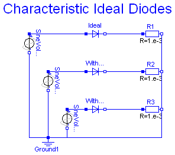
Three examples of ideal diodes are shown:
the totally ideal diode (Ideal) with all parameters to be zero
the nearly ideal diode with Ron=0.1 and Goff=0.1
the nearly ideal but displaced diode with Vknee=5 and Ron=0.1 and
Goff=0.1
The resistance and conductance are chosen untypically high since the slopes should
be seen in the graphics.
Simulate until T=1 s.
Plot in separate windows:
Ideal.i versus Ideal.v
With_Ron_Goff.i versus With_Ron_Goff.v
With_Ron_Goff_Vknee.i versus With_Ron_Goff_Vknee.v
model CharacteristicIdealDiodes "Characteristic of ideal diodes"
extends Modelica.Icons.Example;
Modelica.Electrical.Analog.Ideal.IdealDiode Ideal(
Ron=0, Goff=0);
Modelica.Electrical.Analog.Ideal.IdealDiode With_Ron_Goff(
Ron=0.1, Goff=0.1);
Modelica.Electrical.Analog.Ideal.IdealDiode With_Ron_Goff_Vknee(
Ron=0.2,
Goff=0.2,
Vknee=5);
Modelica.Electrical.Analog.Sources.SineVoltage SineVoltage1(
V=10,
offset=-9);
Modelica.Electrical.Analog.Basic.Ground Ground1;
Modelica.Electrical.Analog.Basic.Resistor R1(R=1.e-3);
Modelica.Electrical.Analog.Basic.Resistor R2(R=1.e-3);
Modelica.Electrical.Analog.Basic.Resistor R3(R=1.e-3);
Modelica.Electrical.Analog.Sources.SineVoltage SineVoltage2(
V=10,
offset=0);
Modelica.Electrical.Analog.Sources.SineVoltage SineVoltage3(
V=10,
offset=0);
equation
connect(Ground1.p, SineVoltage1.n);
connect(Ideal.n, R1.p);
connect(With_Ron_Goff.n, R2.p);
connect(With_Ron_Goff_Vknee.n, R3.p);
connect(R1.n, R2.n);
connect(R2.n, R3.n);
connect(R3.n, Ground1.p);
connect(SineVoltage2.p, Ideal.p);
connect(SineVoltage2.n, Ground1.p);
connect(SineVoltage1.p,With_Ron_Goff. p);
connect(With_Ron_Goff_Vknee.p, SineVoltage3.p);
connect(SineVoltage3.n, Ground1.p);
end CharacteristicIdealDiodes;
Modelica.Electrical.Analog.Examples.CharacteristicThyristors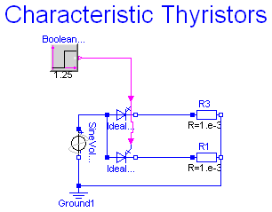
Two examples of thyristors are shown:
the ideal thyristor
and the ideal GTO thyristor with Vknee=5
Simulate until T=2 s.
Plot in separate windows:
IdealThyristor1.i and IdealGTOThyristor1.i
IdealThyristor1.v and IdealGTOThyristor1.v
model CharacteristicThyristors "Characteristic of ideal thyristors"
extends Modelica.Icons.Example;
Modelica.Electrical.Analog.Ideal.IdealThyristor IdealThyristor1(
Vknee=5);
Modelica.Electrical.Analog.Sources.SineVoltage SineVoltage1(V=10,
offset=0);
Modelica.Electrical.Analog.Basic.Ground Ground1;
Modelica.Electrical.Analog.Basic.Resistor R3(R=1.e-3);
Modelica.Blocks.Sources.BooleanStep BooleanStep1(startValue=false,
startTime=1.25);
Modelica.Electrical.Analog.Ideal.IdealGTOThyristor IdealGTOThyristor1(
Vknee=0);
Modelica.Electrical.Analog.Basic.Resistor R1(R=1.e-3);
equation
connect(IdealThyristor1.n, R3.p);
connect(Ground1.p, SineVoltage1.n);
connect(SineVoltage1.p, IdealThyristor1.p);
connect(BooleanStep1.y, IdealThyristor1.fire);
connect(IdealGTOThyristor1.n, R1.p);
connect(R3.n, R1.n);
connect(R1.n, Ground1.p);
connect(IdealGTOThyristor1.p, IdealThyristor1.p);
connect(IdealGTOThyristor1.fire, IdealThyristor1.fire);
end CharacteristicThyristors;
Modelica.Electrical.Analog.Examples.ChuaCircuit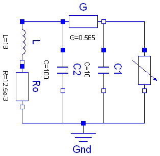
Chua's circuit is the most simple nonlinear circuit which shows chaotic behaviour. The circuit consists of linear basic elements (capacitors, resistor, conductor, inductor), and one nonlinear element, which is called Chua's diode. The chaotic behaviour is simulated.
The simulation end time should be set to 5e4. To get the chaotic behaviour please plot C1.v. Choose C2.v as the independent variable.
encapsulated model ChuaCircuit "Chua's circuit, ns, V, A"
import Modelica.Electrical.Analog.Basic;
import Modelica.Electrical.Analog.Examples.Utilities;
import Modelica.Icons;
extends Icons.Example;
Basic.Inductor L(L=18);
Basic.Resistor Ro(R=12.5e-3);
Basic.Conductor G(G=0.565);
Basic.Capacitor C1(C=10, v(start=4));
Basic.Capacitor C2(C=100);
Utilities.NonlinearResistor Nr(
Ga(min=-1) = -0.757576,
Gb(min=-1) = -0.409091,
Ve=1);
Basic.Ground Gnd;
equation
connect(L.p, G.p);
connect(G.n, Nr.p);
connect(Nr.n, Gnd.p);
connect(C1.p, G.n);
connect(L.n, Ro.p);
connect(G.p, C2.p);
connect(C1.n, Gnd.p);
connect(C2.n, Gnd.p);
connect(Ro.n, Gnd.p);
end ChuaCircuit;
Modelica.Electrical.Analog.Examples.DifferenceAmplifier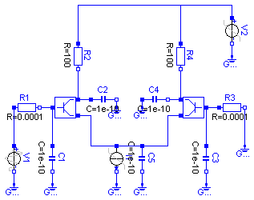
It is a simple NPN transistor amplifier circuit. The voltage difference between R1.p and R3.n is amplified. The output signal is the voltage between R2.n and R4.n. In this example the voltage at V1 is amplified because R3.n is grounded.
The simulation end time should be set to 1e- 8. Please plot the input voltage V1.v, and the output voltages R2.n.v, and R4.n.v.
encapsulated model DifferenceAmplifier
"Simple NPN transistor amplifier circuit"
import Modelica.Electrical.Analog.Basic;
import Modelica.Electrical.Analog.Sources;
import Modelica.Electrical.Analog.Examples.Utilities;
import Modelica.Icons;
extends Icons.Example;
Sources.ExpSineVoltage V1(
V=0.2,
freqHz=0.2e9,
damping=0.1e8);
Sources.RampVoltage V2(V=15, duration=1e-9);
Sources.RampCurrent I1(I=0.16, duration=1e-9);
Basic.Resistor R1(R=0.0001);
Basic.Resistor R2(R=100);
Basic.Resistor R3(R=0.0001);
Basic.Resistor R4(R=100);
Basic.Capacitor C1(C=1e-10);
Basic.Capacitor C4(C=1e-10);
Basic.Capacitor C5(C=1e-10);
Basic.Capacitor C2(C=1e-10);
Basic.Capacitor C3(C=1e-10);
Basic.Ground Gnd1;
Basic.Ground Gnd9;
Basic.Ground Gnd3;
Basic.Ground Gnd2;
Basic.Ground Gnd6;
Basic.Ground Gnd7;
Basic.Ground Gnd8;
Basic.Ground Gnd5;
Basic.Ground Gnd4;
Utilities.Transistor Transistor1;
Utilities.Transistor Transistor2;
equation
connect(V1.n, Gnd1.p);
connect(C1.n, Gnd2.p);
connect(I1.n, Gnd7.p);
connect(C5.n, Gnd8.p);
connect(C3.n, Gnd5.p);
connect(R3.n, Gnd4.p);
connect(C2.n, Gnd3.p);
connect(C4.p, Gnd6.p);
connect(I1.p, C5.p);
connect(R1.p, V1.p);
connect(R2.p, V2.p);
connect(R4.p, V2.p);
connect(V2.n, Gnd9.p);
connect(R1.n, Transistor1.b);
connect(Transistor1.b, C1.p);
connect(Transistor1.c, C2.p);
connect(R2.n, Transistor1.c);
connect(Transistor1.e, I1.p);
connect(Transistor2.b, R3.p);
connect(Transistor2.b, C3.p);
connect(C4.n, Transistor2.c);
connect(R4.n, Transistor2.c);
connect(C5.p, Transistor2.e);
end DifferenceAmplifier;
Modelica.Electrical.Analog.Examples.HeatingMOSInverter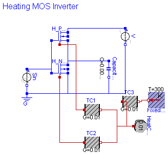
The heating MOS inverter shows a heat flow always if a transistor is leading.
Simulate until T=5 s.
Plot in separate windows:
Sin.p.v and Capacitor1.p.v
HeatCapacitor1.port.T and H_PMOS.heatPort.T and H_NMOS.heatPort.T
H_PMOS.heatPort.Q_flow and H_NMOS.heatPort.Q_flow
model HeatingMOSInverter "Heating MOS Inverter"
extends Modelica.Icons.Example;
Modelica.Electrical.Analog.Basic.Ground G;
Modelica.Electrical.Analog.Sources.SineVoltage Sin(V=5);
Modelica.Electrical.Analog.Basic.Capacitor Capacitor1(C=0.00001);
Modelica.Thermal.HeatTransfer.HeatCapacitor HeatCapacitor1(C=0.01);
Modelica.Thermal.HeatTransfer.ThermalConductor TC1(G=0.01);
Semiconductors.HeatingPMOS H_PMOS;
Semiconductors.HeatingNMOS H_NMOS;
Modelica.Electrical.Analog.Sources.RampVoltage V(V=5, duration=1.e-2);
Modelica.Thermal.HeatTransfer.ThermalConductor TC2(G=0.01);
Modelica.Thermal.HeatTransfer.FixedTemperature FixedTemperature1(T=
300);
Modelica.Thermal.HeatTransfer.ThermalConductor TC3(G=0.01);
equation
connect(Sin.n, G.p);
connect(Capacitor1.n, G.p);
connect(H_NMOS.G, H_PMOS.G);
connect(H_NMOS.G, Sin.p);
connect(H_PMOS.S, H_NMOS.D);
connect(H_NMOS.D, Capacitor1.p);
connect(H_NMOS.B, H_NMOS.S);
connect(H_NMOS.S, G.p);
connect(H_PMOS.B, H_PMOS.D);
connect(V.p, H_PMOS.D);
connect(V.n, G.p);
connect(TC1.port_b, HeatCapacitor1.port);
connect(TC2.port_b, HeatCapacitor1.port);
connect(TC1.port_a, H_PMOS.heatPort);
connect(TC2.port_a, H_NMOS.heatPort);
connect(TC3.port_b, FixedTemperature1.port);
connect(TC3.port_a, HeatCapacitor1.port);
end HeatingMOSInverter;
Modelica.Electrical.Analog.Examples.HeatingNPN_OrGate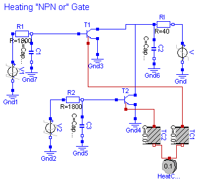
The heating "NPN or" gate shows a heat flow always if a transistor is leading.
Simulate until T=200 s.
Plot in separate windows:
V1.v and V2.v and C2.v
HeatCapacitor1.port.T and T1.heatPort.T and T2.heatPort.T
T1.heatPort.Q_flow and T2.heatPort.Q_flow
model HeatingNPN_OrGate "Heating NPN Or Gate"
extends Modelica.Icons.Example;
constant Modelica.SIunits.Capacitance CapVal=0;
constant Modelica.SIunits.Time tauVal=0;
Modelica.Thermal.HeatTransfer.HeatCapacitor HeatCapacitor1(C=0.1);
Modelica.Thermal.HeatTransfer.ThermalConductor TC1(G=0.01);
Modelica.Thermal.HeatTransfer.ThermalConductor TC2(G=0.01);
Modelica.Electrical.Analog.Sources.RampVoltage V(V=6, duration=5);
Modelica.Electrical.Analog.Sources.TrapezoidVoltage V1(
V=6,
startTime=55,
rising=5,
width=15,
falling=5,
period=50,
nperiod=10);
Modelica.Electrical.Analog.Sources.TrapezoidVoltage V2(
V=6,
startTime=65,
rising=5,
width=15,
falling=5,
period=50,
nperiod=10);
Modelica.Electrical.Analog.Basic.Resistor R1(R=1800);
Modelica.Electrical.Analog.Basic.Resistor R2(R=1800);
Modelica.Electrical.Analog.Basic.Resistor RI(R=40);
Modelica.Electrical.Analog.Basic.Ground Gnd;
Modelica.Electrical.Analog.Basic.Ground Gnd1;
Modelica.Electrical.Analog.Basic.Ground Gnd2;
Modelica.Electrical.Analog.Basic.Ground Gnd3;
Modelica.Electrical.Analog.Basic.Ground Gnd4;
Modelica.Electrical.Analog.Basic.Capacitor C1(C=CapVal);
Modelica.Electrical.Analog.Basic.Capacitor C2(C=CapVal);
Modelica.Electrical.Analog.Basic.Capacitor C3(C=CapVal);
Modelica.Electrical.Analog.Basic.Ground Gnd5;
Modelica.Electrical.Analog.Basic.Ground Gnd6;
Modelica.Electrical.Analog.Basic.Ground Gnd7;
Semiconductors.HeatingNPN T1(
Bf=100,
Br=1,
Is=1.e-14,
Vak=0,
Tauf=tauVal,
Taur=tauVal,
Ccs=CapVal,
Cje=CapVal,
Cjc=CapVal,
Phie=1,
Me=0.5,
Phic=1,
Mc=0.5,
Gbc=1.e-12,
Gbe=1.e-12,
EMax=40,
vt_t(start=0.01, fixed=false));
Semiconductors.HeatingNPN T2(
Bf=100,
Br=1,
Is=1.e-14,
Vak=0,
Tauf=tauVal,
Taur=tauVal,
Ccs=CapVal,
Cje=CapVal,
Cjc=CapVal,
Phie=1,
Me=0.5,
Phic=1,
Mc=0.5,
Gbc=1.e-12,
Gbe=1.e-12,
EMax=40,
vt_t(start=0.01, fixed=false));
equation
connect(Gnd1.p, V1.n);
connect(V1.p, R1.p);
connect(RI.n, V.p);
connect(Gnd.p, V.n);
connect(V2.p, R2.p);
connect(Gnd2.p, V2.n);
connect(Gnd7.p, C1.n);
connect(C2.p, RI.p);
connect(Gnd6.p, C2.n);
connect(C3.p, R2.n);
connect(C1.p, R1.n);
connect(Gnd5.p, C3.n);
connect(T1.B, R1.n);
connect(T1.E, Gnd3.p);
connect(RI.p, T1.C);
connect(T2.B, R2.n);
connect(T2.E, Gnd4.p);
connect(T2.C, RI.p);
connect(TC1.port_b, HeatCapacitor1.port);
connect(TC2.port_b, HeatCapacitor1.port);
connect(TC2.port_a, T2.heatPort);
connect(TC1.port_a, T1.heatPort);
end HeatingNPN_OrGate;
Modelica.Electrical.Analog.Examples.HeatingRectifier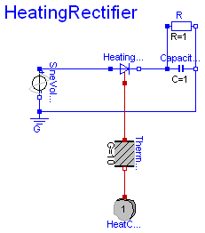
The heating rectifier shows a heat flow always if the electrical capacitor is loaded.
Simulate until T=5 s.
Plot in separate windows:
SineVoltage1.v and Capacitor1.p.v
HeatCapacitor1.port.T and HeatingDiode1.heatPort.T
HeatingDiode1.heatPort.Q_flow
model HeatingRectifier "Heating rectifier" extends Modelica.Icons.Example; Modelica.Electrical.Analog.Semiconductors.HeatingDiode HeatingDiode1; Modelica.Electrical.Analog.Basic.Ground G; Modelica.Electrical.Analog.Sources.SineVoltage SineVoltage1; Modelica.Electrical.Analog.Basic.Capacitor Capacitor1; Modelica.Thermal.HeatTransfer.HeatCapacitor HeatCapacitor1(C=1); Modelica.Thermal.HeatTransfer.ThermalConductor ThermalConductor1(G=10); Modelica.Electrical.Analog.Basic.Resistor R(R=1); equation connect(SineVoltage1.p, HeatingDiode1.p); connect(SineVoltage1.n, G.p); connect(Capacitor1.n, G.p); connect(HeatingDiode1.n, Capacitor1.p); connect(HeatingDiode1.heatPort, ThermalConductor1.port_a); connect(ThermalConductor1.port_b, HeatCapacitor1.port); connect(R.p, Capacitor1.p); connect(R.n, Capacitor1.n); end HeatingRectifier;
Modelica.Electrical.Analog.Examples.NandGate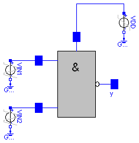
The nand gate is a basic CMOS building block. It consists of four CMOS transistors. The output voltage Nand.y.v is low if and only if the two input voltages at Nand.x1.v and Nand.x2.v are both high. In this way the nand functionality is realized.
The simulation end time should be set to 1e-7. Please plot the input voltages Nand.x1.v, d Nand.x2.v, and the output voltage Nand.y.v.
encapsulated model NandGate
"CMOS NAND Gate (see Tietze/Schenk, page 157)"
import Modelica.Electrical.Analog.Basic;
import Modelica.Electrical.Analog.Sources;
import Modelica.Electrical.Analog.Examples.Utilities;
import Modelica.Icons;
extends Icons.Example;
Sources.TrapezoidVoltage VIN1(
V=3.5,
startTime=20e-9,
rising=1e-9,
width=19e-9,
falling=1.e-9,
period=40e-9);
Sources.TrapezoidVoltage VIN2(
V=3.5,
startTime=10e-9,
rising=1e-9,
width=19e-9,
falling=1.e-9,
period=40e-9);
Sources.RampVoltage VDD(V=5, duration=1e-9);
Basic.Ground Gnd1;
Basic.Ground Gnd4;
Basic.Ground Gnd5;
Utilities.Nand Nand;
equation
connect(VDD.n, Gnd1.p);
connect(VIN1.n, Gnd4.p);
connect(VIN2.n, Gnd5.p);
connect(Nand.Vdd, VDD.p);
connect(VIN1.p, Nand.x1);
connect(VIN2.p, Nand.x2);
end NandGate;
Modelica.Electrical.Analog.Examples.Rectifier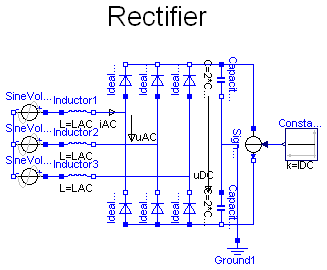
The rectifier example shows a B6 diode bridge fed by a three phase sinusoidal voltage, loaded by a DC current.
DC capacitors start at ideal no-load voltage, thus making easier initial transient.
Simulate until T=0.1 s.
Plot in separate windows:
uDC ... DC-voltage
iAC ... AC-currents 1..3
uAC ... AC-voltages 1..3 (distorted)
Try different load currents iDC = 0..approximately 500 A.
You may watch Losses (of the whole diode bridge) trying different diode parameters.
| Type | Name | Default | Description |
|---|---|---|---|
| Voltage | VAC | 400 | RMS line-to-line [V] |
| Frequency | f | 50 | line frequency [Hz] |
| Inductance | LAC | 60E-6 | line inductor [H] |
| Resistance | Ron | 1E-3 | diode forward resistance [Ohm] |
| Conductance | Goff | 1E-3 | diode backward conductance [S] |
| Voltage | Vknee | 2 | diode threshold voltage [V] |
| Capacitance | CDC | 15E-3 | DC capacitance [F] |
| Current | IDC | 500 | load current [A] |
model Rectifier "B6 diode bridge"
extends Modelica.Icons.Example;
import Modelica.Electrical.Analog.Ideal;
parameter Modelica.SIunits.Voltage VAC=400 "RMS line-to-line";
parameter Modelica.SIunits.Frequency f=50 "line frequency";
parameter Modelica.SIunits.Inductance LAC=60E-6 "line inductor";
parameter Modelica.SIunits.Resistance Ron=1E-3 "diode forward resistance";
parameter Modelica.SIunits.Conductance Goff=1E-3 "diode backward conductance";
parameter Modelica.SIunits.Voltage Vknee=2 "diode threshold voltage";
parameter Modelica.SIunits.Capacitance CDC=15E-3 "DC capacitance";
parameter Modelica.SIunits.Current IDC=500 "load current";
output Modelica.SIunits.Voltage uDC;
output Modelica.SIunits.Current iAC[3];
output Modelica.SIunits.Voltage uAC[3];
output Modelica.SIunits.Power Losses;
Modelica.Electrical.Analog.Sources.SineVoltage SineVoltage1(freqHz=f,
V=VAC*sqrt(2/3));
Modelica.Electrical.Analog.Sources.SineVoltage SineVoltage2(
freqHz=f,
phase=-2/3*Modelica.Constants.pi,
V=VAC*sqrt(2/3));
Modelica.Electrical.Analog.Sources.SineVoltage SineVoltage3(
freqHz=f,
phase=-4/3*Modelica.Constants.pi,
V=VAC*sqrt(2/3));
Modelica.Electrical.Analog.Basic.Inductor Inductor1(L=LAC);
Modelica.Electrical.Analog.Basic.Inductor Inductor2(L=LAC);
Modelica.Electrical.Analog.Basic.Inductor Inductor3(L=LAC);
Ideal.IdealDiode IdealDiode1(
Ron=Ron,
Goff=Goff,
Vknee=Vknee);
Ideal.IdealDiode IdealDiode2(
Ron=Ron,
Goff=Goff,
Vknee=Vknee);
Ideal.IdealDiode IdealDiode3(
Ron=Ron,
Goff=Goff,
Vknee=Vknee);
Ideal.IdealDiode IdealDiode4(
Ron=Ron,
Goff=Goff,
Vknee=Vknee);
Ideal.IdealDiode IdealDiode5(
Ron=Ron,
Goff=Goff,
Vknee=Vknee);
Ideal.IdealDiode IdealDiode6(
Ron=Ron,
Goff=Goff,
Vknee=Vknee);
Modelica.Electrical.Analog.Basic.Capacitor Capacitor1(C=2*CDC);
Modelica.Electrical.Analog.Basic.Capacitor Capacitor2(C=2*CDC);
Modelica.Electrical.Analog.Basic.Ground Ground1;
Modelica.Electrical.Analog.Sources.SignalCurrent SignalCurrent1;
Modelica.Blocks.Sources.Constant Constant1(k=IDC);
initial equation
Capacitor1.v = VAC*sqrt(2)/2;
Capacitor2.v = VAC*sqrt(2)/2;
equation
uDC = Capacitor1.v + Capacitor2.v;
iAC = {Inductor1.i,Inductor2.i,Inductor3.i};
uAC[1] = Inductor1.n.v - Inductor2.n.v;
uAC[2] = Inductor2.n.v - Inductor3.n.v;
uAC[3] = Inductor3.n.v - Inductor1.n.v;
Losses = IdealDiode1.v*IdealDiode1.i + IdealDiode2.v*IdealDiode2.i +
IdealDiode3.v*IdealDiode3.i + IdealDiode4.v*IdealDiode4.i +
IdealDiode5.v*IdealDiode5.i + IdealDiode6.v*IdealDiode6.i;
connect(SineVoltage1.n, SineVoltage2.n);
connect(SineVoltage2.n, SineVoltage3.n);
connect(SineVoltage1.p, Inductor1.p);
connect(SineVoltage2.p, Inductor2.p);
connect(SineVoltage3.p, Inductor3.p);
connect(IdealDiode1.p, IdealDiode4.n);
connect(IdealDiode2.p, IdealDiode5.n);
connect(IdealDiode3.p, IdealDiode6.n);
connect(IdealDiode1.n, IdealDiode2.n);
connect(IdealDiode2.n, IdealDiode3.n);
connect(IdealDiode4.p, IdealDiode5.p);
connect(IdealDiode5.p, IdealDiode6.p);
connect(Capacitor2.n, IdealDiode6.p);
connect(IdealDiode3.n, Capacitor1.p);
connect(Capacitor1.n, Capacitor2.p);
connect(Capacitor2.p, Ground1.p);
connect(Capacitor1.p, SignalCurrent1.p);
connect(SignalCurrent1.n, Capacitor2.n);
connect(Constant1.y, SignalCurrent1.i);
connect(Inductor1.n, IdealDiode1.p);
connect(Inductor2.n, IdealDiode2.p);
connect(Inductor3.n, IdealDiode3.p);
end Rectifier;
Modelica.Electrical.Analog.Examples.ShowSaturatingInductor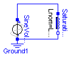
| Type | Name | Default | Description |
|---|---|---|---|
| Inductance | Lzer | 2 | [H] |
| Inductance | Lnom | 1 | [H] |
| Current | Inom | 1 | [A] |
| Inductance | Linf | 0.5 | [H] |
| Voltage | U | 1.25 | [V] |
| Frequency | f | 1/(2*Modelica.Constants.pi) | [Hz] |
| Angle | phase | Modelica.Constants.pi/2 | [rad] |
model ShowSaturatingInductor
"Simple demo to show behaviour of SaturatingInductor component"
extends Modelica.Icons.Example;
parameter Modelica.SIunits.Inductance Lzer=2;
parameter Modelica.SIunits.Inductance Lnom=1;
parameter Modelica.SIunits.Current Inom=1;
parameter Modelica.SIunits.Inductance Linf=0.5;
parameter Modelica.SIunits.Voltage U=1.25;
parameter Modelica.SIunits.Frequency f=1/(2*Modelica.Constants.pi);
parameter Modelica.SIunits.Angle phase=Modelica.Constants.pi/2;
output Modelica.SIunits.Voltage v;
output Modelica.SIunits.Current i;
Modelica.Electrical.Analog.Sources.SineVoltage SineVoltage1(
V=U,
phase=phase,
freqHz=f);
Modelica.Electrical.Analog.Basic.Ground Ground1;
Modelica.Electrical.Analog.Basic.SaturatingInductor SaturatingInductance1(
Lzer=Lzer,
Lnom=Lnom,
Inom=Inom,
Linf=Linf);
equation
v=SaturatingInductance1.v;
i=SaturatingInductance1.i;
connect(SineVoltage1.n, Ground1.p);
connect(SineVoltage1.n, SaturatingInductance1.n);
connect(SaturatingInductance1.p, SineVoltage1.p);
end ShowSaturatingInductor;
Modelica.Electrical.Analog.Examples.ShowVariableResistor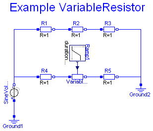
It is a simple test circuit for the VariableResistor. The VariableResistor sould be compared with R2.
Simulate until T=1 s.
model ShowVariableResistor "Simple demo of a VariableResistor model" extends Modelica.Icons.Example; Modelica.Electrical.Analog.Basic.VariableResistor VariableResistor; Modelica.Electrical.Analog.Basic.Ground Ground1; Modelica.Electrical.Analog.Basic.Ground Ground2; Modelica.Electrical.Analog.Basic.Resistor R1; Modelica.Electrical.Analog.Basic.Resistor R2; Modelica.Electrical.Analog.Basic.Resistor R3; Modelica.Electrical.Analog.Basic.Resistor R4; Modelica.Electrical.Analog.Basic.Resistor R5; Modelica.Electrical.Analog.Sources.SineVoltage SineVoltage1; Modelica.Blocks.Sources.Ramp Ramp1(height=5, offset=2); equation connect(R1.n, R2.p); connect(R2.n, R3.p); connect(R4.n, VariableResistor.p); connect(VariableResistor.n, R5.p); connect(R3.n, Ground2.p); connect(Ground2.p, R5.n); connect(SineVoltage1.p, Ground1.p); connect(SineVoltage1.n, R1.p); connect(SineVoltage1.n, R4.p); connect(Ramp1.y, VariableResistor.R); end ShowVariableResistor;
 Modelica.Electrical.Analog.Examples.CauerLowPassSC.Rn
Modelica.Electrical.Analog.Examples.CauerLowPassSC.Rn
| Type | Name | Default | Description |
|---|---|---|---|
| Real | clock | 1 | |
| Resistance | R | 1 | Resistance [Ohm] |
| Type | Name | Description |
|---|---|---|
| NegativePin | n1 | |
| NegativePin | n2 |
model Rn parameter Real clock=1; parameter Modelica.SIunits.Resistance R=1 "Resistance"; Modelica.Blocks.Sources.BooleanPulse BooleanPulse1(period=clock); Modelica.Electrical.Analog.Basic.Capacitor Capacitor1(C=R*clock); Modelica.Electrical.Analog.Ideal.IdealCommutingSwitch IdealCommutingSwitch1; Modelica.Electrical.Analog.Ideal.IdealCommutingSwitch IdealCommutingSwitch2; Modelica.Electrical.Analog.Basic.Ground Ground1; Modelica.Electrical.Analog.Basic.Ground Ground2; Modelica.Electrical.Analog.Interfaces.NegativePin n1; Modelica.Electrical.Analog.Interfaces.NegativePin n2; equation connect(IdealCommutingSwitch1.p,Capacitor1. p); connect(Capacitor1.n,IdealCommutingSwitch2. p); connect(IdealCommutingSwitch2.control,BooleanPulse1. y); connect(IdealCommutingSwitch1.control,BooleanPulse1. y); connect(Ground2.p,IdealCommutingSwitch2. n2); connect(IdealCommutingSwitch2.n1,n2); connect(n1, IdealCommutingSwitch1.n2); connect(Ground1.p, IdealCommutingSwitch1.n1); end Rn;
| Type | Name | Default | Description |
|---|---|---|---|
| Real | clock | 1 | |
| Resistance | R | 1 | Resistance [Ohm] |
| Type | Name | Description |
|---|---|---|
| NegativePin | n1 | |
| NegativePin | n2 |
model Rp parameter Real clock=1; parameter Modelica.SIunits.Resistance R=1 "Resistance"; Modelica.Blocks.Sources.BooleanPulse BooleanPulse1(period=clock); Modelica.Electrical.Analog.Basic.Capacitor Capacitor1(C=R*clock); Modelica.Electrical.Analog.Ideal.IdealCommutingSwitch IdealCommutingSwitch1; Modelica.Electrical.Analog.Ideal.IdealCommutingSwitch IdealCommutingSwitch2; Modelica.Electrical.Analog.Basic.Ground Ground1; Modelica.Electrical.Analog.Basic.Ground Ground2; Modelica.Electrical.Analog.Interfaces.NegativePin n1; Modelica.Electrical.Analog.Interfaces.NegativePin n2; equation connect(IdealCommutingSwitch1.p, Capacitor1.p); connect(Capacitor1.n, IdealCommutingSwitch2.p); connect(IdealCommutingSwitch2.control, BooleanPulse1.y); connect(IdealCommutingSwitch1.control, BooleanPulse1.y); connect(Ground1.p, IdealCommutingSwitch1.n2); connect(Ground2.p, IdealCommutingSwitch2.n2); connect(IdealCommutingSwitch1.n1, n1); connect(IdealCommutingSwitch2.n1, n2); end Rp;